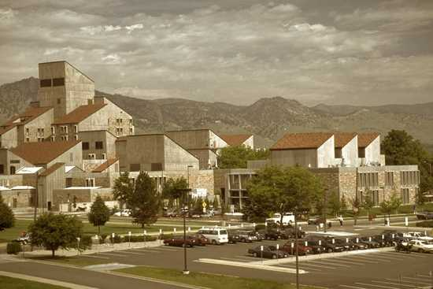

Exploring Boulder
by Robert Soden
I'm a first year PhD student at CU Boulder. I'm new to town and will be here for awhile so wanted to get to know it better. This map is a small attempt to do so.
Discovery Learning Center
The Discovery Learning Program at the University of Colorado Boulder brings together engineering students, faculty, government and business partners to advance research and education across traditional boundaries. This is my office and where I spend most of my time.
Boulder History Museum
The Boulder Historical Society and Museum was founded in 1944 by A.A. 'Gov' Paddock, then publisher of the Boulder Daily Camera. The organization, now called the Boulder History Museum, is located in the historic landmark Harbeck-Bergheim House on University Hill in Boulder, Colorado. A private-not-for-profit organization, it is governed by a board of trustees of 18 community leaders and has a staff of five.
Boulder Shambhala Center
Established in 1974, the Boulder Shambhala Center is part of an international community of urban meditation and rural retreat centers founded by the Venerable Chögyam Trungpa Rinpoche, now under the direction of Sakyong Mipham Rinpoche.
At the Boulder Shambhala Center, we practice and teach mindfulness-awareness meditation. This technique originates directly from the Buddha Shakyamuni and has been passed from teacher to student for over 2500 years.
The Laughing Goat
Great cafe for doing homework. World-class espresso locally roasted & beautifully crafted. Featuring premium estate, shade-grown, organic and Fair Trade certified coffee from the Kaladi Brothers of Denver served in a comfortable atmosphere of intimate, organic elegance in the heart of East Pearl in downtown Boulder. A premiere showcase for artistic, literary & musical expression featuring weekly readings, monthly gallery showings and nightly performances. Also now serving beer & wine with a nightly happy hour from 4 to 8.
The Kitchen Next Door
Solid happy hours, right on Pearl St. The Kitchen Next Door is a community pub, open seven days a week.
Hop to it! Homebrew Supplies
Lame hours and a pretty bad selection but the only homebrew shop in town. You'd think there'd be better options so I'm guessing most people mail-order.
Community Cycles
These guys are going to help me build my bike.
ATLAS Building
This is the home of my PhD program. I probably should be spending more time over there. ATLAS stands for Alliance between Technology, Learning and Society.
Map data © OpenStreetMap ContributorsModified from Young Hahn's "Hack Your Maps" tutorial